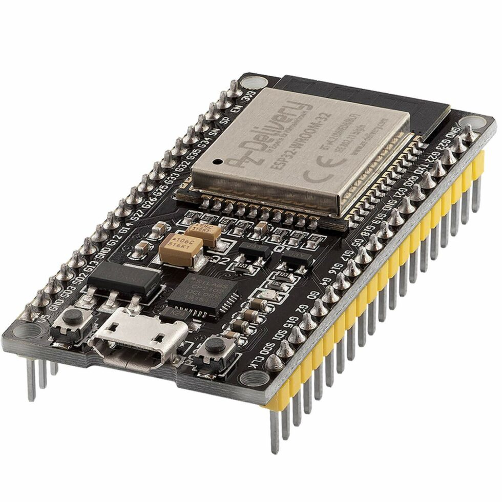

Bieżące Odczyty z Pomieszczeń
Ładowanie danych o bieżących odczytach...
Status Użytkownika
Sprawdzanie statusu...
Zaloguj sięO projekcie
Ten system wykorzystuje ESP32 do monitorowania warunków w pomieszczeniach. Czujniki przesyłają dane przez Wi-Fi do bazy Firebase, a Ty możesz je śledzić na tej stronie.
